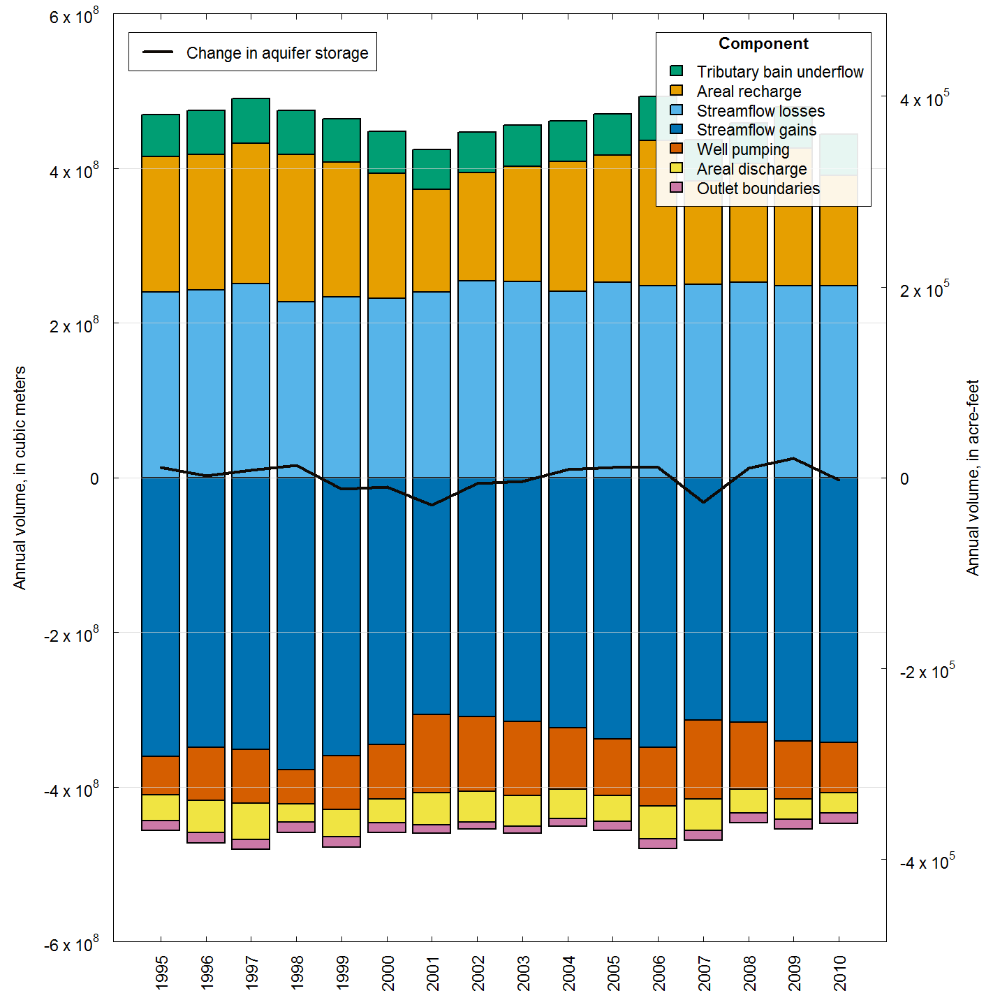

Scenario 2
This example scenario describes the effects of allowing an existing parcel of irrigated land to be reclassified as “non-irrigated”; that is, what happens when you voluntarily allow an irrigated parcel to go idle? Model boundary conditions are modified in the archived calibrated model to best represent this scenario. The idled land parcel (about 600 acres, or better yet 2.4-square kilometers) is shown in the following figure.

Changes to unprocessed-data files include:
Irrigated lands (“extdata/irr/irr.lands.<YYYY>.zip”)—changed parcel status to “non-irrigated”.
Evapotranspiration (ET)(“extdata/et/et.<YYYMM>.tif”)—reduced ET within the parcel and set equal to the monthly precipitation during the irrigation season (April–October).
Combined surface-water irrigation diversions (“extdata/div/comb.sw.irr.csv”)–removed diversions associated with wells in parcel.
Groundwater points of diversion (“extdata/div/pod.gw.csv”)—removed diversions for wells in parcel.
Well sites (“extdata/div/pod.wells.zip”)—removed sites located in parcel.
Files that did not need to be modified for this scenario, but may want to considered for modification in similar types of model scenarios include:
Surface water diversions (“div.sw.csv”)—we assumed surface water associated with the idled parcel is now delivered to other “junior” users within the same canal service area.
Groundwater diversions (“div.gw.csv”)—if there had been “measured” groundwater diversions associated with the parcel, those would need to be removed.
Create Datasets
The R script for creating the modified datasets (shown in code blocks below) is primarily based on embedded R code in Appendix C. The first step is to load the wrv package, and all its existing datasets, in our R environment. To do so, open an R session and paste the following command at the command prompt.
library(wrv)Note that each time we create a modified dataset it will mask the previously loaded version.
Next, parse and evaluate the preamble commands in the Appendix C R-source-code file (“sir20165080_AppendixC.R”).
file <- system.file("doc", "sir20165080_AppendixC.R", package = "wrv")
app.c.r <- readLines(file)
line <- grep("## ----download_git", app.c.r) - 1
eval(parse(text = app.c.r[1:line]))
app.c.r <- app.c.r[-(1:line)]Skip initial commands for downloading the archived unprocessed-data files to a temporary directory.
line <- grep("## ----create_data_dir", app.c.r) - 1
app.c.r <- app.c.r[-(1:line)]Specify the location of the folder containing the modified unprocessed-data files (“inst/extdata”).
dir.git <- file.path(getwd(), "extdata")Parse and evaluate the inital commands for specifying unit conversions, coordinate reference system (CRS), and common spatial/temporal grid.
line <- grep("## ----canal_seep_1", app.c.r) - 1
eval(parse(text = app.c.r[1:line]))
app.c.r <- app.c.r[-(1:line)]Level 1 data
Processing instructions for creating level 1 modified datasets. The code chunks shown below are copied from the Appendix C R-source file located in the wrv package (“sir20165080_AppendixC.R”).
Combined surface-water irrigation diversions (comb.sw.irr)
Read combined surface-water irrigation diversions data and write its external representation as an R object in “data/comb.sw.irr.rda”.
file <- file.path(dir.git, "div/comb.sw.irr.csv")
comb.sw.irr <- read.csv(file, strip.white = TRUE)
comb.sw.irr$Pdate <- as.Date(comb.sw.irr$Pdate, format = "%m/%d/%Y")
comb.sw.irr$MaxDivRate <- comb.sw.irr$MaxDivRate * cfs.to.m3.per.d
save(comb.sw.irr, file = file.path(dir.dat, "comb.sw.irr.rda"), compress = "xz")Points of diversion for groundwater (pod.gw)
Read points of diversion for groundwater data and write its external representation as an R object in “data/pod.gw.csv.rda”.
file <- file.path(dir.git, "div/pod.gw.csv")
d <- read.csv(file, strip.white = TRUE, stringsAsFactors = FALSE)
d$Pdate <- as.Date(d$PriorityDa, format = "%m/%d/%Y")
d$IrrRate <- d$IRRcfs * cfs.to.m3.per.d
columns <- c("WMISNumber", "WaterRight", "EntityName", "EntitySrce", "Pdate", "IrrRate")
pod.gw <- d[, columns]
save(pod.gw, file = file.path(dir.dat, "pod.gw.rda"), compress = "xz")Well completions (pod.wells)
Read well completions data and initialize new variable in its data table.
path <- file.path(dir.git, "div")
pod.wells <- readOGR(dsn = path, layer = "pod.wells", verbose = FALSE)
pod.wells <- spTransform(pod.wells, crs)
d <- pod.wells@data
columns <- c("TopOpen1", "BotOpen1", "TopOpen2", "BotOpen2")
d[, columns] <- d[, columns] * ft.to.m
d[d$TopOpen1 == 0 | d$BotOpen1 == 0, c("TopOpen1", "BotOpen1")] <- NA
d[d$TopOpen2 == 0 | d$BotOpen2 == 0, c("TopOpen2", "BotOpen2")] <- NAA missing well completion is assumed identical to the completion of its nearest-neighbor well. Write its external representation as an R object in “data/pod.wells.rda”.
is.pred <- is.na(d$TopOpen1)
dists <- as.matrix(dist(coordinates(pod.wells)))
dists <- dists[!is.pred & d$WellUse %in% "Irrigation", ]
nearest.well <- as.integer(apply(dists, 2, function(i) names(which.min(i))))
d$TopOpen1[is.pred] <- d$TopOpen1[nearest.well[is.pred]]
d$BotOpen1[is.pred] <- d$BotOpen1[nearest.well[is.pred]]
columns <- c("WMISNumber", "WellUse", "TopOpen1", "BotOpen1", "TopOpen2", "BotOpen2")
pod.wells@data <- d[, columns]
save(pod.wells, file = file.path(dir.dat, "pod.wells.rda"), compress = "xz")Irrigation lands (irr.lands)
Read irrigated and semi-irrigated lands data and write its external representation as an R object in “data/irr.lands.rda”.
path <- file.path(dir.git, "irr")
yr <- c(1996, 2000, 2002, 2006, 2008, 2009, 2010)
files <- paste0("irr.lands.", yr)
irr.lands <- list()
for (i in seq_along(files)) {
p <- readOGR(dsn = path, layer = files[i], verbose = FALSE)
p <- spTransform(p, crs)
p@data <- p@data[, paste0("STATUS_", substr(yr[i], 1, 3)), drop = FALSE]
names(p@data) <- "Status"
p <- p[p@data[, "Status"] != "non-irrigated", ]
p <- rgeos::gBuffer(p, width = 0, byid = TRUE)
p@data <- droplevels(p@data)
irr.lands[[i]] <- p
}
names(irr.lands) <- as.character(yr)
save(irr.lands, file = file.path(dir.dat, "irr.lands.rda"), compress = "xz")Evapotranspiration (et)
Read evapotranspiration (ET) data and average by month. Note that ET raster files (“.tif”) are required for every month in the simulation, not just months with modified values.
files <- file.path(dir.git, "et", paste0("et.", yr.mo, ".tif"))
FUN <- function(i) {
r <- readGDAL(files[i], band = 1, silent = TRUE)
r[[1]] <- r[[1]] * mm.to.m
return(r)
}
et.raw <- lapply(seq_along(files), FUN)
names(et.raw) <- as.character(yr.mo)Project raster data into model grid and place an upper and lower limit on ET that is 3 standard deviations from the mean value. Write its external representation as an R object in “data/et.rda”.
high.res.spatial.grid <- disaggregate(spatial.grid, fact = 5L) # added line
is.missing <- is.na(alluvium.thickness)
FUN <- function(i) {
r <- aggregate(projectRaster(raster(i), high.res.spatial.grid), fact = 5L)
r[is.missing] <- NA
upper.limit <- mean(r[], na.rm = TRUE) + sd(r[], na.rm = TRUE) * 3
r[r > upper.limit] <- upper.limit
return(round(r, digits = 6))
}
et <- stack(lapply(et.raw, FUN), quick = TRUE)
names(et) <- as.character(yr.mo)
save(et, file = file.path(dir.dat, "et.rda"), compress = "xz")Level 2 data
Level 2 datasets result from the analysis of level 1 data. Parse and evaluate all level 2 datasets and write their external representations as R objects in “data”. Datasets include monthly irrigation entity components (entity.components), rasterized canals (r.canals), rasterized monthly irrigation entities (rs.entities), and rasterized monthly recharge on non-irrigated lands (rs.rech.non.irr).
line <- grep("## ----entity_components_1", app.c.r) - 1
app.c.r <- app.c.r[-(1:line)]
eval(parse(text = app.c.r))Process Model
The R script for processing the model (shown in code blocks below) is primarily based on embedded R code in Appendix D.
Pre-process
Clear R objects from the current R environment and re-load modified datasets.
rm(list = ls())
files <- list.files(file.path(getwd(), "data"), pattern = "*.rda$", full.names = TRUE)
for (i in files) load(i)Read Appendix D R-source-code file (“sir20165080_AppendixD.R”) and remove all lines composed of the invisible(dev.off()) command. This command is only useful when copy/pasting directly from the R-source-code file.
file <- system.file("doc", "sir20165080_AppendixD.R", package = "wrv")
app.d.r <- readLines(file)
app.d.r <- app.d.r[-grep("invisible.*dev.off", app.d.r)]Parse and evaluate all previous commands up to writing model input files.
line <- grep("## ----write_modflow_input", app.d.r)
eval(parse(text = app.d.r[1:line]))
app.d.r <- app.d.r[-(1:line)]
line <- grep("## ----", app.d.r)[1] - 1
app.d.r <- app.d.r[-(1:line)]Set a model name identifier and pathname to the model-run folder (“model”).
id <- "wrv_mfusg"
dir.run <- file.path(getwd(), "model")Write model input files to the model-run folder.
WriteModflowInput(rs.model, rech, well, trib, misc, river, drain, id, dir.run,
is.convertible = FALSE, tr.stress.periods = tr.stress.periods,
ntime.steps = ntime.steps, verbose = FALSE)Copy calibrated files
Overwrite model input reference files (“model/*.ref”) containing hydraulic conductivity and storage coefficient values, with reference files containing their calibrated values (“archive/*.ref”). And copy calibrated data for irrigation efficiency (“eff.csv”), canal seepage (“seep.csv”), and tributary underflow (“trib.csv”) to the model-run folder.
dir.archive <- file.path(getwd(), "archive")
files <- list.files(dir.archive, full.names = TRUE)
files <- files[grep("(\\.ref|eff\\.csv|seep\\.csv|trib\\.csv)$", files)]
file.copy(files, dir.run, overwrite = TRUE)Save file containing R objects.
Write a few of the R objects to a single binary R-data file in the model-run folder (“model/model.rda”).
rs <- subset(rs.model, c("lay1.top", sprintf("lay%s.bot", 1:3)))
save(rs, misc, trib, tr.stress.periods, ss.stress.periods, reduction, d.in.mv.ave,
file = file.path(dir.run, "model.rda"))Run water budget calculation
Run the water-budget calculation and specify function arguments using modified datasets.
UpdateWaterBudget(dir.run, id, qa.tables = "english", pod.wells = pod.wells,
comb.sw.irr = comb.sw.irr, et = et, pod.gw = pod.gw,
entity.components = entity.components, rs.entities = rs.entities)Run MODFLOW
Run the modified-model simulation.
line <- grep("## ----read_budget", app.d.r)
eval(parse(text = app.d.r[1:line]))and remove the evaluated commands.
app.d.r <- app.d.r[-(1:line)]Post-process
Both the modified and archived model simulations are included the post-processing instructions.
Read water budget for archived simulation
Read water budget output for archived simulation, located in “archive” folder, and save results.
dir.run <- file.path(getwd(), "archive")
line <- grep("## ----table_budget", app.d.r)
eval(parse(text = app.d.r[1:line]))
d.river.arch <- d.river
d.drain.1.arch <- d.drain.1
d.drain.2.arch <- d.drain.2
d.rech.arch <- d.rech
d.well.arch <- d.well
d.trib.arch <- d.tribRead water budget for modified simulation
Read water budget output for modified simulation, located in “model” folder, and summarize results in the following figure.
dir.run <- file.path(getwd(), "model")
line <- grep("## ----table_budget", app.d.r)
eval(parse(text = app.d.r[1:line]))
Figure: Volumetric water budget components by year, including annual change in storage, for the entire simulation period, 1995–2010, south-central Idaho—based on the Scenario 2 model results.
Compare water budgets
A comparison between archived and modified water budgets is shown in the following table.
Table: Water budgets for modified and archived simulation, specified as volumetric flow rates average over 1998–2010. [Inflow: water entering the aquifer system. Outflow: water leaving the aquifer system. Component: a water budget component in the groundwater-flow model. Archived Rate: is the mean volumetric flow rate for the archived simulation. Modified Rate: is the mean volumetric flow rate for the modified simulation. Difference: is the archived rate subtracted from the modified rate. Abbreviations: acre-ft/yr, acre-feet per year]
| Component | Archived rate (acre-ft/yr) |
Modified rate (acre-ft/yr) |
Difference (arce-ft/yr) |
Percent change |
|
|---|---|---|---|---|---|
| Inflow | Water-table recharge | 131,738 | 131,594 | -144 | -0.1 |
| Streamflow losses | 177,813 | 306,807 | 128,994 | 72.5 | |
| Tributary basin underflow | 44,042 | 44,042 | 0 | 0.0 | |
| Outflow | Water-table discharge | 28,708 | 28,708 | 0 | 0.0 |
| Streamflow gains | 251,967 | 376,047 | 124,080 | 49.2 | |
| Production well pumping | 62,538 | 61,459 | -1,078 | -1.7 | |
| Stanton Crossing outlet boundary | 284 | 254 | -30 | -10.5 | |
| Silver Creek outlet boundary | 9,492 | 15,913 | 6,421 | 67.6 | |
| Inflow - Outflow | Change in aquifer storage | 604 | 62 | -542 | -89.7 |
Read heads for archived simulation
Read simulated hydraulic heads for archived simulation, located in “archive” folder, and save results.
line <- grep("## ----read_head", app.d.r) - 1
app.d.r <- app.d.r[-(1:line)]
dir.run <- file.path(getwd(), "archive")
line <- grep("## ----map_head_exceedance", app.d.r)
eval(parse(text = app.d.r[1:line]))
rs.wt.arch <- rs.wtRead heads for modified simulation
Read simulated water table for modified simulation, located in “model” folder.
dir.run <- file.path(getwd(), "model")
line <- grep("## ----map_head_exceedance", app.d.r)
eval(parse(text = app.d.r[1:line]))
line <- grep("## ----map_wt_e", app.d.r)
app.d.r <- app.d.r[-(1:line)]Compare simulated water tables
A comparison between simulated water tables is shown in the following figure.
Figure: Simulated water table difference, defined as the archived water table subtracted from the modified water table, during December 2010.